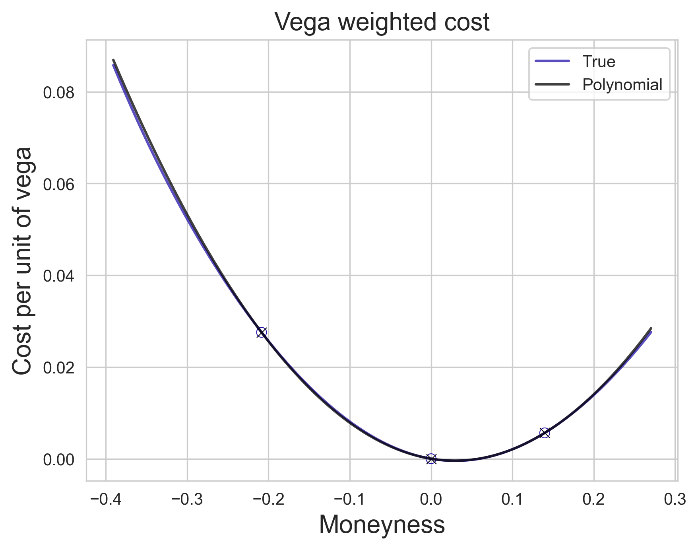
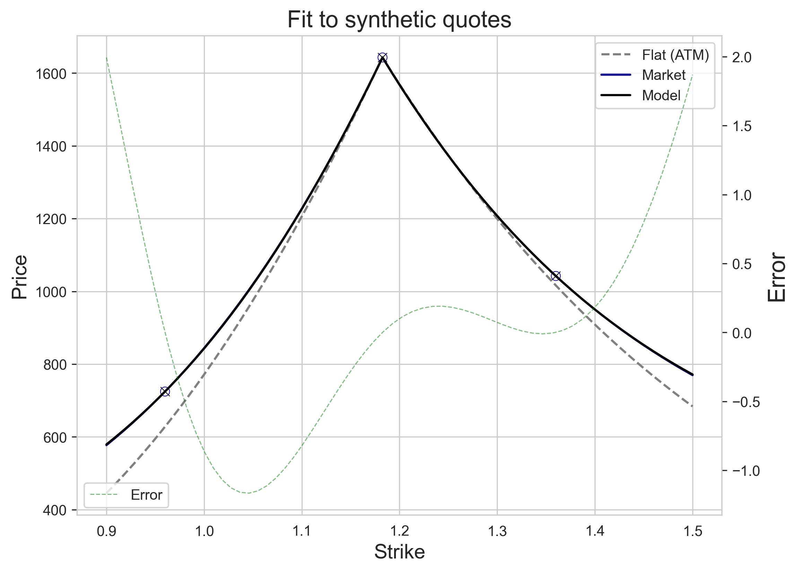
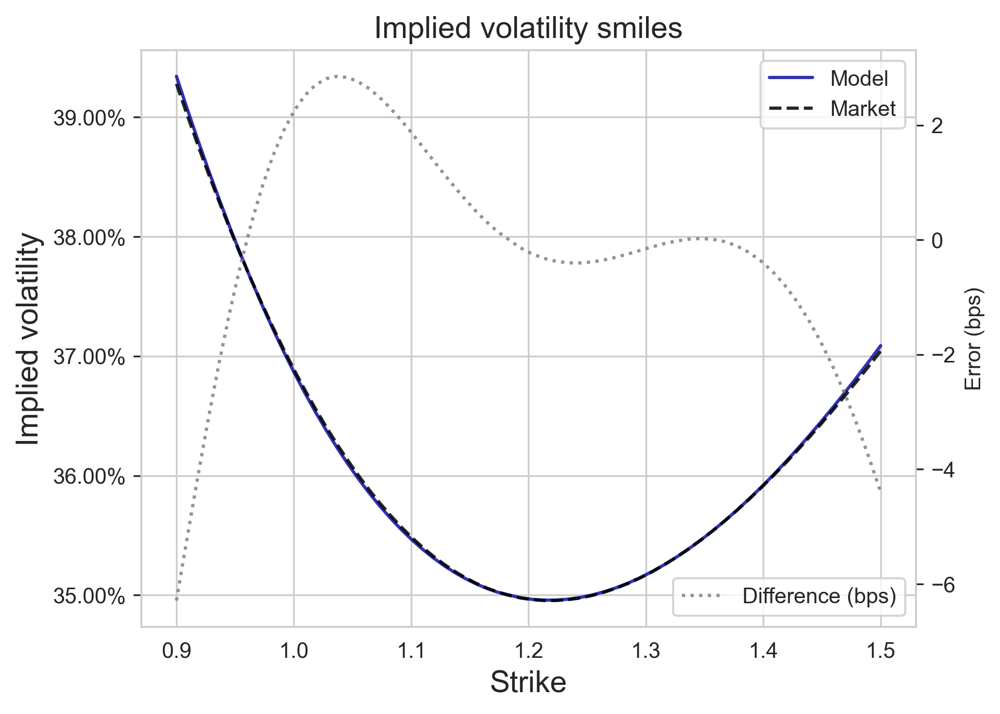

I will assume familiarity with Black--Scholes and Black '76 pricing models. In order to keep things simple, we will work with the forward premium and the Black '76 model formula, using the time-to-maturity rescaled volatility $v = \sqrt{\tau}\sigma$ and the log-moneyness $x = \log \frac FK$, and set $$ C(x,v) = F \Phi\left( \frac xv + \frac v2 \right) - K \Phi\left( \frac xv - \frac v2 \right). $$ For the moment, we fix the time to maturity $\tau$ and the forward $F$. It is well known that, if we consider market quotes $C_{\mathsf{MKT}}(x)$ at different moneyness levels, we can imply a unique $v(x)$ such that $C_{\mathsf{MKT}}(x) = C(x, v(x))$. Looking at real market data for European options on equity indices or stocks, we can make the following observations:
The Black--Scholes pricing model produces a fair price assuming we are able to perfectly hedge our position using the underlying. In particular, it assumes that $v(x)$ is constant in $x$ and $\tau$, and the hedging approach will miss the impact of these changes in the position value. The good news is that the replication approach of Black and Scholes can be used to figure out how to correctly hedge the volatility risk: we will assume that (as observed) the parameter $\sigma$ is stochastic. More precisely, if we assume that spot follows a log-normal model where, quite crucially, volatility is stochastic, the resulting PnL decomposition contains new terms capturing exposure to:
The idea of the Vanna--Volga model is to use three options to zero out these risks on top of the underlying: options must be hedged with options. Writing out the hedging equation $d\Pi = dC - w\cdot dH$ where $H$ is our hedging portfolio and $w$ is the 4-vector of weights, we will obtain a linear system $Aw = b$ with three equations and three unknowns (the option weights). The columns of $A$ are the vega, vanna and volga of the options (priced with the constant Black--Scholes model, using some pre-selected volatility level $v_0$), while $b$ is the same vector for our position. It turns out that, for a call (or put) option, we can compute these by $$ \mathsf{Vega}(x,v_0) = F \varphi\left(\frac x {v_0} + \frac {v_0}2\right),\\ \frac{\mathsf{Volga}(x,v_0)}{\mathsf{Vega}(x,v_0)} = \frac{1}{{v_0}} \cdot \left(\frac {x^2}{{v_0}^2} - \frac {{v_0}^2}4\right), \\ \frac{\mathsf{Vanna}(x,v_0)}{\mathsf{Vega}(x,v_0)} = -\frac{1}{F{v_0}} \left(\frac x {v_0} - \frac {v_0} 2\right). $$ Let us introduce useful notation and write $\mathsf{VolRisk}(x,v_0)$ for vector $(\mathsf{Vega}(x,v_0), \mathsf{Vanna}(x,v_0), \mathsf{Volga}(x,v_0))$. In particular, $b$ is the risk vector of our position (at current log-moneyness $x$).
There are two important observations that we will make: first, both volga and vanna are multiples of vega and, second, these multiples are polynomials in $x$. The Vanna--Volga model, in a nutshell, effectively and accurately estimates the vega-weighted mispricing $$\frac{C^{\mathsf{MKT}}(x) - C(x,v_0)}{\mathsf{Vega}(x,v_0)}$$ around $x=0$ as a degree two polynomial in $x$. The coefficients are uniquely determined by the condition that this is zero for our three options. What is perhaps more surprising is how well a degree two polynomial approximates this for small $x$! In the image below, we show the anchor points, using a fictitious volatility smile.

Fundamental result. There always exist a unique 3-vector $y$, which we will call the Vanna--Volga weight vector, such that $$C^{\mathsf{MKT}}(x) - C(x,v_0) = y \cdot \mathsf{VolRisk}(x,v_0)$$ holds for our three hedging options.
Proof. A degree two polynomial is uniquely determined by three values, so we can always find such coefficients. ||
In order to keep the post short and not too technical, we will only state and prove the following. We will choose $v_0$ to be the ATMF volatility, that is, $v_0 = v(0)$. We will see later that this is relatively stable, so it is not a bad choice of reference flat volatility to follow.
Lemma 1. (Model weights pricing) Suppose that $(x_1,x_2,x_3)$ are three different log-moneyness points, and let $c$ be the $3$-vector with $$c_i = C^{\mathsf{MKT}}(x_i) - C(x_i, \sigma_{\mathsf{ATM}}).$$ Then $y$ is the unique solution to the system $A^\top y = c$ where $A$ is the matrix defined before for $(x_1,x_2,x_3)$.
Proof. The equation $A^\perp y = c$ says precisely that the equation above holds for $x_1, x_2$ and $x_3$. ||
Lemma 2.(Portfolio weights pricing) Suppose that $(x_1,x_2,x_3)$ are three different log-moneyness points, and let $w$ be the unique solution to the system $Aw = b$. Then we also have that $$C^{\mathsf{MDL}}(x) = C(x,v_0) + c^\perp w.$$ In other words, the model price is given by the naive Black--Scholes quote plus the weighted excess cost of the three hedging options against their naive Black--Scholes quote.
Proof. We have that $y^\perp b= y^\perp Aw = c^\perp w$. ||
Below, we show the result of computing the Vanna--Volga model prices using the same synthetic volatility smile, which we match at three points. In more extreme scenarios, the fit may not look as good, but it should still be very good close to $x=0$. Note that in practice, one can directly observe market quotes for options, compute the implied volatility smile and fit it to a robust parametric form using the same three targets, like that of Gatheral and Jacquier here.
The point of the above computations is rather that one can use the
same replication and no-arbitrage arguments of Black--Scholes to
obtain a fairly good model around $x=0$ and, at the same time, quickly
obtain hedge ratios. It is important to note that the vega factor will
decay quite quickly, and that the smile will eventually fall to ATM levels
due to this. In other words, the model fails at extreme regions of the wings,
so one must look for an alternative treatment here; this is in particular
achieved by parametric approaches like the SVI parametrization cited above,
which make sure that at extreme strikes the volatility behaves according
to Lee's moment
formula. But that is another story, for another post.

